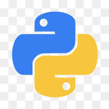
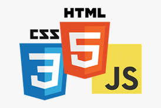
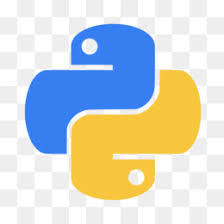
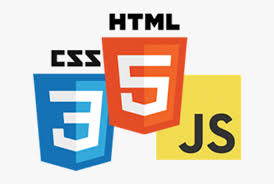

Apresentação

Olá, me chamo Paulo Ricardo é este e um site portfólio criado para mostrar as minhas habilidades com as ferramentas de desenvolvimento Web.
Quem eu sou?
Estudante de sistemas de informação na Faculdade Dom Pedro II, que busca uma chance de entrar para mundo de desenvolvimento (WEB), utilizando as principais linguagens e tecnologias do mercado para atingir este objetivo.
Resido em Salvador - BA
Formação Académica
- ∘ Ensino médio - 2º Grau completo técnico em segurança do trabalho.
- Colégio–Centro Estadual De Educação Profissional em saúde Anísio Teixeira- CEEPSAT
- ∘ Ensino Superior - Cursando Sistemas de Informação.
- Faculdade Dom Pedro II - 4º Semestre
Formação Complementar
- ∘ Conhecimento na linguagem CSharp.
- ∘ Conhecimento na linguagem PHP.
- ∘ Conhecimento na linguagem Python.
- ∘ Conhecimento em HTML, CSS, JAVASCRIPT.
- ∘ Conhecimento em DER, MER, UML.
- ∘ Inglês - Básico
- ∘ Português - Fluente
- ∘ Espanhol - Intermediário

 



Meu repositorio:github
Onde eu pratico e aprendo novos conteudos:Clique aqui.